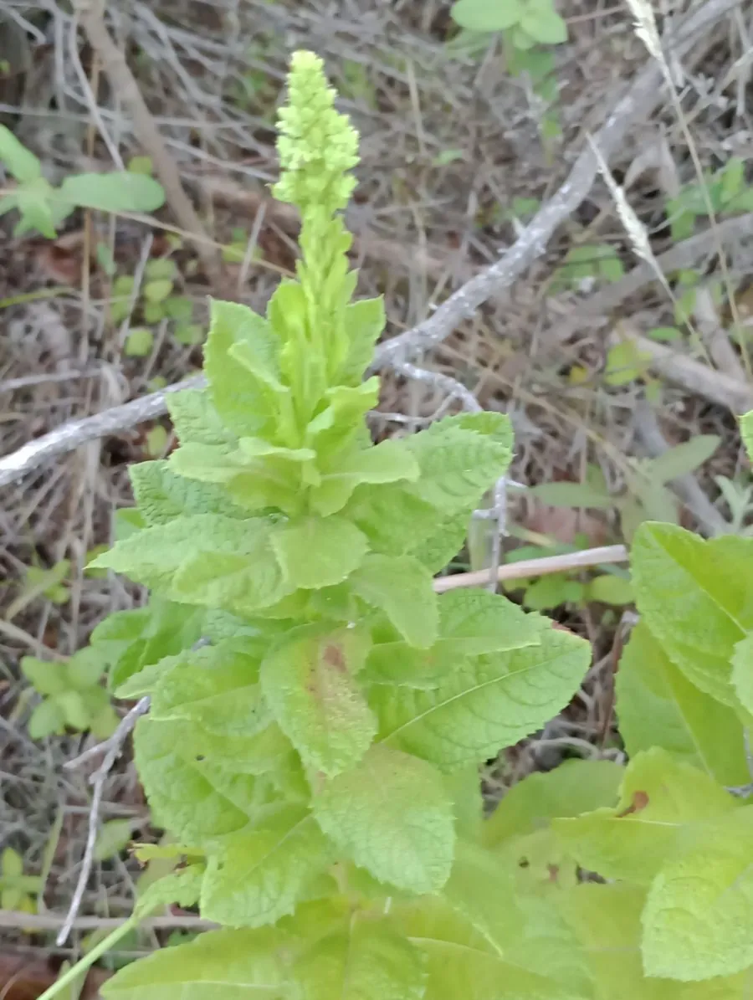

其他无脊椎动物 · 动物界
棘阿米巴 Acanthamoeba castellanii

广泛分布于水土的自由生活阿米巴，可经角膜伤口侵入引起棘阿米巴角膜炎，多见于隐形眼镜使用者。
- 分类
- 门变形虫门纲叶足纲目棘阿米巴目科棘阿米巴科属棘阿米巴属
- 栖息环境
- 土壤、淡水、海水、泳池、自来水与潮湿镜片镜盒
- 地理分布
- 全球分布，各地土壤与淡水环境中普遍存在
- 保护级别
- 自由生活原虫，无保护需求
物种志
棘阿米巴的滋养体长约十五至四十微米，体表伸出棘状伪足，因此得名。环境不利时它形成双层壁的包囊，包囊抵抗力极强，能耐受干燥、消毒剂和温度变化，在灰尘和干燥镜片上也能存活很久。它广泛分布于土壤、淡水、海水、泳池和自来水中，以细菌和有机颗粒为食。
人感染主要经两条途径：佩戴隐形眼镜时用自来水冲洗镜片或镜盒，阿米巴附着镜片后经角膜微小损伤侵入，引起棘阿米巴角膜炎，表现为眼痛、畏光、流泪和视力下降，病程迁延；免疫功能低下者还可发生皮肤或播散性感染。防护关键在于不用自来水冲洗隐形眼镜、不戴镜游泳或洗澡、定期更换镜片和镜盒，眼部不适要及时就医。
形态与习性
- 滋养体大小十五至四十微米，具棘状伪足
- 包囊双层壁，耐干燥与消毒剂
- 分布土壤、淡水、海水、泳池与自来水
- 感染途径经角膜微小损伤侵入
- 高危行为自来水冲洗镜片、戴镜游泳
- 防护不用自来水冲镜片，定期换镜盒
趣味知识
- 它的包囊能在干燥的镜片上活很久，普通护理液未必杀得死。
- 用自来水冲一下隐形眼镜，就可能把阿米巴送进角膜。
- 这种角膜炎治起来很慢，眼痛畏光会持续数周。